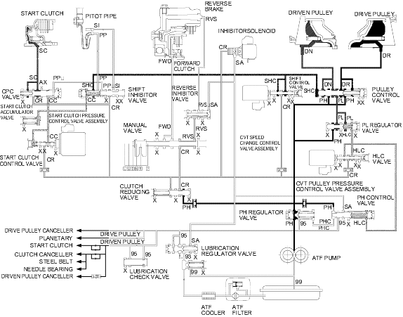

Position
Position
Honda Multi Matic Transmission/CVT
|
14-282 |
Hydraulic Flow (cont'd)
Position
Reverse Inhibitor Control
If the position is selected while the vehicle is moving forward at speeds over 6 mph (10 km/h), the PCM outputs the signal to turn ON the inhibitor solenoid and the SH-A pressure (SA) in the right end of the reverse inhibitor valve is released. The reverse inhibitor valve is moved to the left side and covers the port to stop reverse brake pressure to the reverse brake from the manual valve. Reverse brake pressure (RVS) is not applied to the reverse brake and power is not transmitted to the reverse direction.
NOTE: When used, ''left'' or ''right'' indicates direction on the hydraulic circuit.
